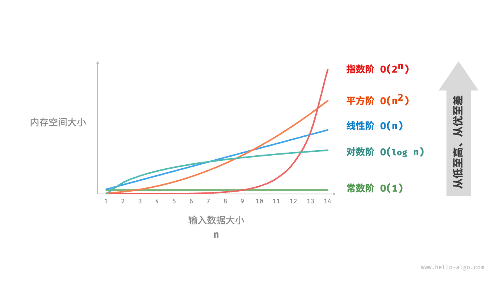
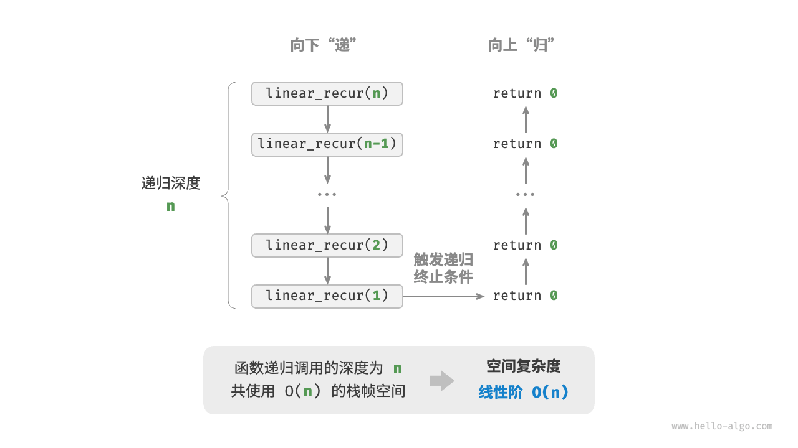

空间复杂度
「空间复杂度 space complexity」用于衡量算法占用内存空间随着数据量变大时的增长趋势。这个概念与时间复杂度非常类似，只需将“运行时间”替换为“占用内存空间”。
算法相关空间
算法在运行过程中使用的内存空间主要包括以下几种。
- 输入空间：用于存储算法的输入数据。
- 暂存空间：用于存储算法在运行过程中的变量、对象、函数上下文等数据。
- 输出空间：用于存储算法的输出数据。
一般情况下，空间复杂度的统计范围是“暂存空间”加上“输出空间”。
暂存空间可以进一步划分为三个部分。
- 暂存数据：用于保存算法运行过程中的各种常量、变量、对象等。
- 栈帧空间：用于保存调用函数的上下文数据。系统在每次调用函数时都会在栈顶部创建一个栈帧，函数返回后，栈帧空间会被释放。
- 指令空间：用于保存编译后的程序指令，在实际统计中通常忽略不计。
在分析一段程序的空间复杂度时，我们通常统计暂存数据、栈帧空间和输出数据三部分，如下图所示。

相关代码如下：
"Python"
```python title="" class Node:
"""类""" def __init__(self, x: int): self.val: int = x // 节点值 self.next: Node | None = None // 指向下一节点的引用def function() -> int:
"""函数""" // 执行某些操作... return 0def algorithm(n) -> int: // 输入数据
A = 0 // 暂存数据（常量，一般用大写字母表示） b = 0 // 暂存数据（变量） node = Node(0) // 暂存数据（对象） c = function() // 栈帧空间（调用函数） return A + b + c // 输出数据```
"C++"
```cpp title="" / 结构体 / struct Node {
int val; Node *next; Node(int x) : val(x), next(nullptr) {}};
/ 函数 / int func() {
// 执行某些操作... return 0;}
int algorithm(int n) { // 输入数据
const int a = 0; // 暂存数据（常量） int b = 0; // 暂存数据（变量） Node* node = new Node(0); // 暂存数据（对象） int c = func(); // 栈帧空间（调用函数） return a + b + c; // 输出数据} ```
"Java"
```java title="" / 类 / class Node {
int val; Node next; Node(int x) { val = x; }}
/ 函数 / int function() {
// 执行某些操作... return 0;}
int algorithm(int n) { // 输入数据
final int a = 0; // 暂存数据（常量） int b = 0; // 暂存数据（变量） Node node = new Node(0); // 暂存数据（对象） int c = function(); // 栈帧空间（调用函数） return a + b + c; // 输出数据} ```
"C#"
```csharp title="" / 类 / class Node(int x) {
int val = x; Node next;}
/ 函数 / int Function() {
// 执行某些操作... return 0;}
int Algorithm(int n) { // 输入数据
const int a = 0; // 暂存数据（常量） int b = 0; // 暂存数据（变量） Node node = new(0); // 暂存数据（对象） int c = Function(); // 栈帧空间（调用函数） return a + b + c; // 输出数据} ```
"Go"
```go title="" / 结构体 / type node struct {
val int next *node}
/ 创建 node 结构体 / func newNode(val int) *node {
return &node{val: val}}
/ 函数 / func function() int {
// 执行某些操作... return 0}
func algorithm(n int) int { // 输入数据
const a = 0 // 暂存数据（常量） b := 0 // 暂存数据（变量） newNode(0) // 暂存数据（对象） c := function() // 栈帧空间（调用函数） return a + b + c // 输出数据} ```
"Swift"
```swift title="" / 类 / class Node {
var val: Int var next: Node? init(x: Int) { val = x }}
/ 函数 / func function() -> Int {
// 执行某些操作... return 0}
func algorithm(n: Int) -> Int { // 输入数据
let a = 0 // 暂存数据（常量） var b = 0 // 暂存数据（变量） let node = Node(x: 0) // 暂存数据（对象） let c = function() // 栈帧空间（调用函数） return a + b + c // 输出数据} ```
"JS"
```javascript title="" / 类 / class Node {
val; next; constructor(val) { this.val = val - undefined ? 0 : val; // 节点值 this.next = null; // 指向下一节点的引用 }}
/ 函数 / function constFunc() {
// 执行某些操作 return 0;}
function algorithm(n) { // 输入数据
const a = 0; // 暂存数据（常量） let b = 0; // 暂存数据（变量） const node = new Node(0); // 暂存数据（对象） const c = constFunc(); // 栈帧空间（调用函数） return a + b + c; // 输出数据} ```
"TS"
```typescript title="" / 类 / class Node {
val: number; next: Node | null; constructor(val?: number) { this.val = val - undefined ? 0 : val; // 节点值 this.next = null; // 指向下一节点的引用 }}
/ 函数 / function constFunc(): number {
// 执行某些操作 return 0;}
function algorithm(n: number): number { // 输入数据
const a = 0; // 暂存数据（常量） let b = 0; // 暂存数据（变量） const node = new Node(0); // 暂存数据（对象） const c = constFunc(); // 栈帧空间（调用函数） return a + b + c; // 输出数据} ```
"Dart"
```dart title="" / 类 / class Node {
int val; Node next; Node(this.val, [this.next]);}
/ 函数 / int function() {
// 执行某些操作... return 0;}
int algorithm(int n) { // 输入数据
const int a = 0; // 暂存数据（常量） int b = 0; // 暂存数据（变量） Node node = Node(0); // 暂存数据（对象） int c = function(); // 栈帧空间（调用函数） return a + b + c; // 输出数据} ```
"Rust"
```rust title="" use std::rc::Rc; use std::cell::RefCell;
/ 结构体 / struct Node {
val: i32, next: Option<Rc<RefCell<Node>>>,}
/ 创建 Node 结构体 / impl Node {
fn new(val: i32) -> Self { Self { val: val, next: None } }}
/ 函数 / fn function() -> i32 {
// 执行某些操作... return 0;}
fn algorithm(n: i32) -> i32 { // 输入数据
const a: i32 = 0; // 暂存数据（常量） let mut b = 0; // 暂存数据（变量） let node = Node::new(0); // 暂存数据（对象） let c = function(); // 栈帧空间（调用函数） return a + b + c; // 输出数据} ```
"C"
```c title="" / 函数 / int func() {
// 执行某些操作... return 0;}
int algorithm(int n) { // 输入数据
const int a = 0; // 暂存数据（常量） int b = 0; // 暂存数据（变量） int c = func(); // 栈帧空间（调用函数） return a + b + c; // 输出数据} ```
"Zig"
```zig title=""
```
推算方法
空间复杂度的推算方法与时间复杂度大致相同，只需将统计对象从“操作数量”转为“使用空间大小”。
而与时间复杂度不同的是，我们通常只关注最差空间复杂度。这是因为内存空间是一项硬性要求，我们必须确保在所有输入数据下都有足够的内存空间预留。
观察以下代码，最差空间复杂度中的“最差”有两层含义。
- 以最差输入数据为准：当 $n < 10$ 时，空间复杂度为 $O(1)$ ；但当 $n > 10$ 时，初始化的数组
nums占用 $O(n)$ 空间，因此最差空间复杂度为 $O(n)$ 。 以算法运行中的峰值内存为准：例如，程序在执行最后一行之前，占用 $O(1)$ 空间；当初始化数组
nums时，程序占用 $O(n)$ 空间，因此最差空间复杂度为 $O(n)$ 。"Python"
```python title="" def algorithm(n: int):
a = 0 // O(1) b = [0] * 10000 // O(1) if n > 10: nums = [0] * n // O(n)```
"C++"
```cpp title="" void algorithm(int n) {
int a = 0; // O(1) vector<int> b(10000); // O(1) if (n > 10) vector<int> nums(n); // O(n)} ```
"Java"
```java title="" void algorithm(int n) {
int a = 0; // O(1) int[] b = new int[10000]; // O(1) if (n > 10) int[] nums = new int[n]; // O(n)} ```
"C#"
```csharp title="" void Algorithm(int n) {
int a = 0; // O(1) int[] b = new int[10000]; // O(1) if (n > 10) { int[] nums = new int[n]; // O(n) }} ```
"Go"
```go title="" func algorithm(n int) {
a := 0 // O(1) b := make([]int, 10000) // O(1) var nums []int if n > 10 { nums := make([]int, n) // O(n) } fmt.Println(a, b, nums)} ```
"Swift"
```swift title="" func algorithm(n: Int) {
let a = 0 // O(1) let b = Array(repeating: 0, count: 10000) // O(1) if n > 10 { let nums = Array(repeating: 0, count: n) // O(n) }} ```
"JS"
```javascript title="" function algorithm(n) {
const a = 0; // O(1) const b = new Array(10000); // O(1) if (n > 10) { const nums = new Array(n); // O(n) }} ```
"TS"
```typescript title="" function algorithm(n: number): void {
const a = 0; // O(1) const b = new Array(10000); // O(1) if (n > 10) { const nums = new Array(n); // O(n) }} ```
"Dart"
```dart title="" void algorithm(int n) {
int a = 0; // O(1) List<int> b = List.filled(10000, 0); // O(1) if (n > 10) { List<int> nums = List.filled(n, 0); // O(n) }} ```
"Rust"
```rust title="" fn algorithm(n: i32) {
let a = 0; // O(1) let b = [0; 10000]; // O(1) if n > 10 { let nums = vec![0; n as usize]; // O(n) }} ```
"C"
```c title="" void algorithm(int n) {
int a = 0; // O(1) int b[10000]; // O(1) if (n > 10) int nums[n] = {0}; // O(n)} ```
"Zig"
```zig title=""
```
在递归函数中，需要注意统计栈帧空间。观察以下代码：
"Python"
```python title="" def function() -> int:
// 执行某些操作 return 0def loop(n: int):
"""循环的空间复杂度为 O(1)""" for _ in range(n): function()def recur(n: int) -> int:
"""递归的空间复杂度为 O(n)""" if n == 1: return return recur(n - 1)```
"C++"
```cpp title="" int func() {
// 执行某些操作 return 0;} / 循环 O(1) / void loop(int n) {
for (int i = 0; i < n; i++) { func(); }} / 递归 O(n) / void recur(int n) {
if (n == 1) return; return recur(n - 1);} ```
"Java"
```java title="" int function() {
// 执行某些操作 return 0;} / 循环 O(1) / void loop(int n) {
for (int i = 0; i < n; i++) { function(); }} / 递归 O(n) / void recur(int n) {
if (n == 1) return; return recur(n - 1);} ```
"C#"
```csharp title="" int Function() {
// 执行某些操作 return 0;} / 循环 O(1) / void Loop(int n) {
for (int i = 0; i < n; i++) { Function(); }} / 递归 O(n) / int Recur(int n) {
if (n == 1) return 1; return Recur(n - 1);} ```
"Go"
```go title="" func function() int {
// 执行某些操作 return 0}
/ 循环 O(1) / func loop(n int) {
for i := 0; i < n; i++ { function() }}
/ 递归 O(n) / func recur(n int) {
if n == 1 { return } recur(n - 1)} ```
"Swift"
```swift title="" @discardableResult func function() -> Int {
// 执行某些操作 return 0}
/ 循环 O(1) / func loop(n: Int) {
for _ in 0 ..< n { function() }}
/ 递归 O(n) / func recur(n: Int) {
if n == 1 { return } recur(n: n - 1)} ```
"JS"
```javascript title="" function constFunc() {
// 执行某些操作 return 0;} / 循环 O(1) / function loop(n) {
for (let i = 0; i < n; i++) { constFunc(); }} / 递归 O(n) / function recur(n) {
if (n - 1) return; return recur(n - 1);} ```
"TS"
```typescript title="" function constFunc(): number {
// 执行某些操作 return 0;} / 循环 O(1) / function loop(n: number): void {
for (let i = 0; i < n; i++) { constFunc(); }} / 递归 O(n) / function recur(n: number): void {
if (n - 1) return; return recur(n - 1);} ```
"Dart"
```dart title="" int function() {
// 执行某些操作 return 0;} / 循环 O(1) / void loop(int n) {
for (int i = 0; i < n; i++) { function(); }} / 递归 O(n) / void recur(int n) {
if (n == 1) return; return recur(n - 1);} ```
"Rust"
```rust title="" fn function() -> i32 {
// 执行某些操作 return 0;} / 循环 O(1) / fn loop(n: i32) {
for i in 0..n { function(); }} / 递归 O(n) / void recur(n: i32) {
if n == 1 { return; } recur(n - 1);} ```
"C"
```c title="" int func() {
// 执行某些操作 return 0;} / 循环 O(1) / void loop(int n) {
for (int i = 0; i < n; i++) { func(); }} / 递归 O(n) / void recur(int n) {
if (n == 1) return; return recur(n - 1);} ```
"Zig"
```zig title=""
```
函数 loop() 和 recur() 的时间复杂度都为 $O(n)$ ，但空间复杂度不同。
- 函数
loop()在循环中调用了 $n$ 次function()，每轮中的function()都返回并释放了栈帧空间，因此空间复杂度仍为 $O(1)$ 。 - 递归函数
recur()在运行过程中会同时存在 $n$ 个未返回的recur()，从而占用 $O(n)$ 的栈帧空间。
常见类型
设输入数据大小为 $n$ ，下图展示了常见的空间复杂度类型（从低到高排列）。

常数阶 $O(1)$
常数阶常见于数量与输入数据大小 $n$ 无关的常量、变量、对象。
需要注意的是，在循环中初始化变量或调用函数而占用的内存，在进入下一循环后就会被释放，因此不会累积占用空间，空间复杂度仍为 $O(1)$ ：
- "Python" ```python def function() -> int: """函数""" // 执行某些操作 return 0
def constant(n: int): """常数阶""" // 常量、变量、对象占用 O(1) 空间 a = 0 nums = [0] * 10000 node = ListNode(0) // 循环中的变量占用 O(1) 空间 for in range(n): c = 0 // 循环中的函数占用 O(1) 空间 for in range(n): function()
- "C++"
```cpp
/* 函数 */
int func() {
// 执行某些操作
return 0;
}
/* 常数阶 */
void constant(int n) {
// 常量、变量、对象占用 O(1) 空间
const int a = 0;
int b = 0;
vector<int> nums(10000);
ListNode node(0);
// 循环中的变量占用 O(1) 空间
for (int i = 0; i < n; i++) {
int c = 0;
}
// 循环中的函数占用 O(1) 空间
for (int i = 0; i < n; i++) {
func();
}
}
- "Java" ```java / 函数 / int function() { // 执行某些操作 return 0; }
/ 常数阶 / void constant(int n) { // 常量、变量、对象占用 O(1) 空间 final int a = 0; int b = 0; int[] nums = new int[10000]; ListNode node = new ListNode(0); // 循环中的变量占用 O(1) 空间 for (int i = 0; i < n; i++) { int c = 0; } // 循环中的函数占用 O(1) 空间 for (int i = 0; i < n; i++) { function(); } }
### 线性阶 $O(n)$
线性阶常见于元素数量与 $n$ 成正比的数组、链表、栈、队列等：
- "Python"
```python
def linear(n: int):
"""线性阶"""
// 长度为 n 的列表占用 O(n) 空间
nums = [0] * n
// 长度为 n 的哈希表占用 O(n) 空间
hmap = dict[int, str]()
for i in range(n):
hmap[i] = str(i)
"C++"
/* 线性阶 */ void linear(int n) { // 长度为 n 的数组占用 O(n) 空间 vector<int> nums(n); // 长度为 n 的列表占用 O(n) 空间 vector<ListNode> nodes; for (int i = 0; i < n; i++) { nodes.push_back(ListNode(i)); } // 长度为 n 的哈希表占用 O(n) 空间 unordered_map<int, string> map; for (int i = 0; i < n; i++) { map[i] = to_string(i); } }"Java"
/* 线性阶 */ void linear(int n) { // 长度为 n 的数组占用 O(n) 空间 int[] nums = new int[n]; // 长度为 n 的列表占用 O(n) 空间 List<ListNode> nodes = new ArrayList<>(); for (int i = 0; i < n; i++) { nodes.add(new ListNode(i)); } // 长度为 n 的哈希表占用 O(n) 空间 Map<Integer, String> map = new HashMap<>(); for (int i = 0; i < n; i++) { map.put(i, String.valueOf(i)); } }
如下图所示，此函数的递归深度为 $n$ ，即同时存在 $n$ 个未返回的 linear_recur() 函数，使用 $O(n)$ 大小的栈帧空间：
"Python"
def linear_recur(n: int): """线性阶（递归实现）""" print("递归 n =", n) if n == 1: return linear_recur(n - 1)"C++"
/* 线性阶（递归实现） */ void linearRecur(int n) { cout << "递归 n = " << n << endl; if (n == 1) return; linearRecur(n - 1); }"Java"
/* 线性阶（递归实现） */ void linearRecur(int n) { System.out.println("递归 n = " + n); if (n == 1) return; linearRecur(n - 1); }

平方阶 $O(n^2)$
平方阶常见于矩阵和图，元素数量与 $n$ 成平方关系：
"Python"
def quadratic(n: int): """平方阶""" // 二维列表占用 O(n^2) 空间 num_matrix = [[0] * n for _ in range(n)]"C++"
/* 平方阶 */ void quadratic(int n) { // 二维列表占用 O(n^2) 空间 vector<vector<int>> numMatrix; for (int i = 0; i < n; i++) { vector<int> tmp; for (int j = 0; j < n; j++) { tmp.push_back(0); } numMatrix.push_back(tmp); } }"Java"
/* 平方阶 */ void quadratic(int n) { // 矩阵占用 O(n^2) 空间 int[][] numMatrix = new int[n][n]; // 二维列表占用 O(n^2) 空间 List<List<Integer>> numList = new ArrayList<>(); for (int i = 0; i < n; i++) { List<Integer> tmp = new ArrayList<>(); for (int j = 0; j < n; j++) { tmp.add(0); } numList.add(tmp); } }
如下图所示，该函数的递归深度为 $n$ ，在每个递归函数中都初始化了一个数组，长度分别为 $n$、$n-1$、$\dots$、$2$、$1$ ，平均长度为 $n / 2$ ，因此总体占用 $O(n^2)$ 空间：
"Python"
def quadratic_recur(n: int) -> int: """平方阶（递归实现）""" if n <= 0: return 0 // 数组 nums 长度为 n, n-1, ..., 2, 1 nums = [0] * n return quadratic_recur(n - 1)"C++"
/* 平方阶（递归实现） */ int quadraticRecur(int n) { if (n <= 0) return 0; vector<int> nums(n); cout << "递归 n = " << n << " 中的 nums 长度 = " << nums.size() << endl; return quadraticRecur(n - 1); }"Java"
/* 平方阶（递归实现） */ int quadraticRecur(int n) { if (n <= 0) return 0; // 数组 nums 长度为 n, n-1, ..., 2, 1 int[] nums = new int[n]; System.out.println("递归 n = " + n + " 中的 nums 长度 = " + nums.length); return quadraticRecur(n - 1); }

指数阶 $O(2^n)$
指数阶常见于二叉树。观察下图，层数为 $n$ 的“满二叉树”的节点数量为 $2^n - 1$ ，占用 $O(2^n)$ 空间：
"Python"
def build_tree(n: int) -> TreeNode | None: """指数阶（建立满二叉树）""" if n == 0: return None root = TreeNode(0) root.left = build_tree(n - 1) root.right = build_tree(n - 1) return root"C++"
/* 指数阶（建立满二叉树） */ TreeNode *buildTree(int n) { if (n == 0) return nullptr; TreeNode *root = new TreeNode(0); root->left = buildTree(n - 1); root->right = buildTree(n - 1); return root; }"Java"
/* 指数阶（建立满二叉树） */ TreeNode buildTree(int n) { if (n == 0) return null; TreeNode root = new TreeNode(0); root.left = buildTree(n - 1); root.right = buildTree(n - 1); return root; }

对数阶 $O(\log n)$
对数阶常见于分治算法。例如归并排序，输入长度为 $n$ 的数组，每轮递归将数组从中点处划分为两半，形成高度为 $\log n$ 的递归树，使用 $O(\log n)$ 栈帧空间。
再例如将数字转化为字符串，输入一个正整数 $n$ ，它的位数为 $\log{10} n + 1$ ，即对应字符串长度为 $\log{10} n + 1$ ，因此空间复杂度为 $O(\log_{10} n + 1) = O(\log n)$ 。
权衡时间与空间
理想情况下，我们希望算法的时间复杂度和空间复杂度都能达到最优。然而在实际情况中，同时优化时间复杂度和空间复杂度通常非常困难。
降低时间复杂度通常需要以提升空间复杂度为代价，反之亦然。我们将牺牲内存空间来提升算法运行速度的思路称为“以空间换时间”；反之，则称为“以时间换空间”。
选择哪种思路取决于我们更看重哪个方面。在大多数情况下，时间比空间更宝贵，因此“以空间换时间”通常是更常用的策略。当然，在数据量很大的情况下，控制空间复杂度也非常重要。